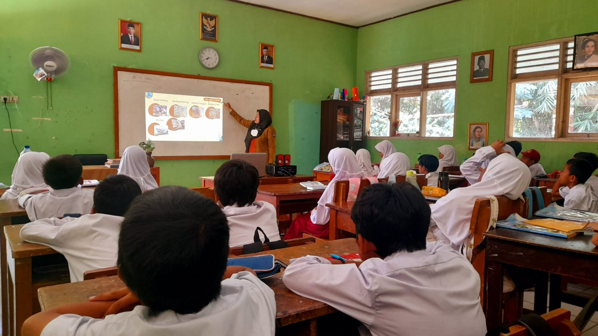
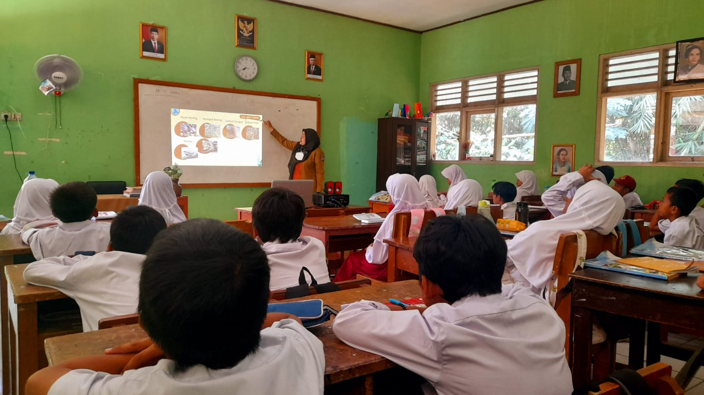

Pendidikan Berkualitas menunjukkan kemajuan yang signifikan meskipun dihadapkan pada berbagai tantangan yang cukup rumit. Dimana saat ini, angka partisipasi kasar pada tingkat pendidikan dasar telah mencapai angka 99,27% dengan adanya program wajib belajar 12 tahun yang terus didorong oleh pemerintah. Selain itu, akses pembelajaran di daerah terpencil juga sudah mulai meluas melalui adanya program digitalisasi sekolah yang disebarkan di platform-platform. Seperti, Rumah Belajar dan TV Edukasi. Namun, berdasarkan hasil Assessment Kompetensi Minimum (AKM) menunjukan bahwa masih terdapat 48% siswa Indonesia yang berada di bawah kompetensi minimum dalam literasi dan membaca, serta 45% siswa yang memiliki nilai dibawah standar dalam numerasi. Selain itu, terdapat juga kesenjangan kualitas pendidikan. Dimana antara Jawa dan luar Jawa, kualitas pendidikannya masih sangat signifikan. Hal ini dikarenakan adanya fasilitas dan kualitas guru yang tidak merata. Sehingga pendidikan dan sumber daya manusianya juga berbeda.
Dalam kondisi ini, terdapat beberapa tantangan yang harus dihadapi. Salah satunya mencangkup perbedaan kualitas, fasilitas, dan infrastruktur. Terutama di dalam daerah terpencil masih sangat banyak sekolah-sekolah yang fasilitasnya tidak layak. Tidak hanya di daerah terpencil saja, tetapi juga antar sekolahan di perkotaan. Masih terdapat beberapa sekolah negeri dan swasta yang infrastruktur, kualitas, dan fasilitasnya masih bisa diperbaiki lagi. Tantangan besar lainnya adalah mengatasi kesenjangan kompetensi dasar, literasi, dan numerasi yang masih dialami oleh hampir setengah dari siswa Indonesia. Hal ini menunjukkan bahwa pemerintah perlu melakukan observasi terhadap sekolahan di daerah terpencil supaya bisa sesegera mungkin ditangani. Supaya siswa bisa belajar dengan nyaman dan dengan kualitas dan fasilitas yang mencukupi. Tidak hanya infrastrukturnya saja, pemerintah juga sudah harus mulai bergeser dari memastikan fasilitas sekolah yang baik ke kualitas sekolah yang baik. Dimana sekolah di pedalaman juga berhak mendapatkan pengajaran dari guru yang profesional.
Dibalik semua tantangan tersebut, sebenarnya masih ada sangat banyak potensi dan kesempatan bagi kita dan pemerintah untuk memperbaiki keadaan. Seperti yang kita tau, pemerintah sempat membuat komitmen dalam hal digitalisasi pendidikan melalui platform “Rumah Belajar”. Hal ini dapat dioptimalkan untuk menjangkau daerah yang tertinggal serta untuk menyediakan materi pelajaran yang standar supaya siswa di daerah tersebut juga bisa mengejar materi yang tertinggal. Kita sebagai masyarakat, juga bisa ikut serta membantu menyebarkan materi tersebut melalui budaya literasi di rumah, menyediakan program bimbingan gratis secara sukarela kepada orang yang membutuhkan, atau bisa juga berkolaborasi dengan sekolah untuk pelatihan guru. Supaya guru bisa lebih profesional dan mendapat wawasan yang lebih luas lagi. Dengan semua upaya ini, Indonesia dapat mengubah tantangan ini menjadi peluang untuk membangun fondasi pendidikan yang lebih kokoh, inklusif, dan berkualitas bagi seluruh anak bangsa.
dan Berdampak Bagi Sesama!✨🤝🎯